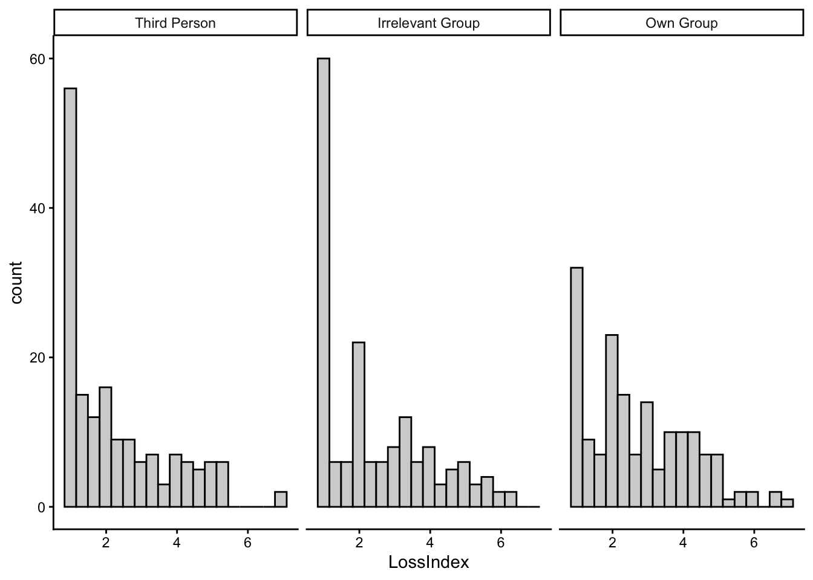
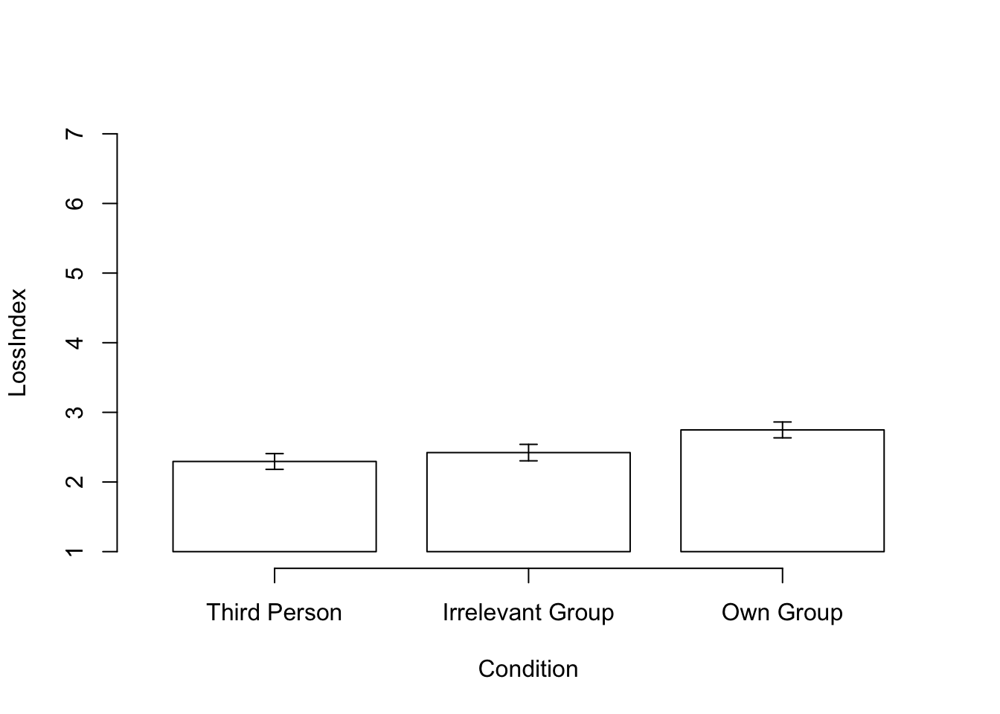
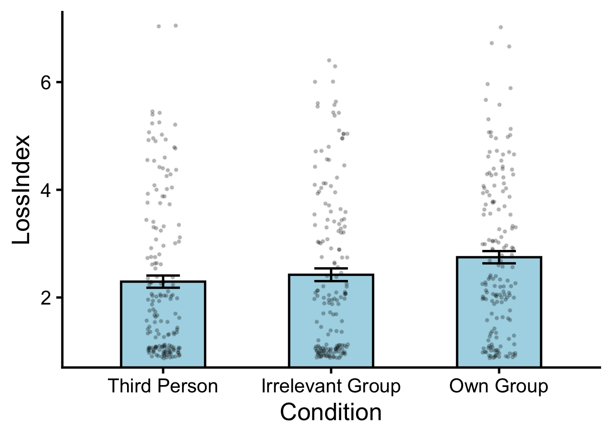

library(tidyverse) # for data wrangling and visualization
library(psych) # for describe()
library(BrailleR) # for accessibility
GoBlind()Preliminaries
1 Data
1.1 Read in and clean the data
df <- read_csv('data/rifkin2025_study5.csv') %>%
as_tibble() %>%
mutate(Condition = factor(
Condition,
levels=c("Third Person Miss",
"Miss - Irrelevant Group",
"Miss - Own Group"
),
labels=c("Third Person",
"Irrelevant Group",
"Own Group")))
glimpse(df)Rows: 494
Columns: 5
$ ID <chr> "Subj1", "Subj2", "Subj3", "Subj6", "Subj7", "Subj8", "Su…
$ Condition <fct> Third Person, Third Person, Third Person, Third Person, T…
$ LossIndex <dbl> 4.00, 3.00, 2.00, 1.00, 2.67, 1.00, 2.33, 1.00, 5.00, 5.3…
$ BondingIndex <dbl> 3.333333, 6.333333, 5.666667, 6.666667, 6.333333, 4.00000…
$ Age <dbl> 34, 49, 48, 31, 33, 35, 36, 31, 36, 33, 39, 34, 53, 43, 5…1.2 Inspect the data
df %>%
psych::describe() %>%
knitr::kable()| vars | n | mean | sd | median | trimmed | mad | min | max | range | skew | kurtosis | se | |
|---|---|---|---|---|---|---|---|---|---|---|---|---|---|
| ID* | 1 | 494 | 247.500000 | 142.7497811 | 247.500000 | 247.500000 | 183.1011 | 1.000000 | 494 | 493.000000 | 0.0000000 | -1.2072899 | 6.4226163 |
| Condition* | 2 | 494 | 1.997976 | 0.8169080 | 2.000000 | 1.997475 | 1.4826 | 1.000000 | 3 | 2.000000 | 0.0037057 | -1.5045348 | 0.0367544 |
| LossIndex | 3 | 494 | 2.487692 | 1.4872266 | 2.000000 | 2.304520 | 1.4826 | 1.000000 | 7 | 6.000000 | 0.8060560 | -0.3083666 | 0.0669135 |
| BondingIndex | 4 | 494 | 5.503374 | 0.9505997 | 5.333333 | 5.535354 | 0.9884 | 1.666667 | 7 | 5.333333 | -0.4061585 | 0.1936018 | 0.0427695 |
| Age | 5 | 494 | 41.605263 | 12.8729181 | 39.000000 | 40.500000 | 11.8608 | 19.000000 | 81 | 62.000000 | 0.7176875 | -0.1331657 | 0.5791800 |
2 Check Assumptions
There are 4 assumptions for one-way between-subject ANOVA.
- Continuous Data: The data are continuous (interval or ratio scale).
- Independence: The data are independent (no same participant is measured more than once in our sample).
- Normality: The residuals (deviations from the group mean) are normally distributed within each group.
- Homogeneity of Variance: Group variances are equal.
As with the t-tests, the first two assumptions are coming from the research design. In our data, we will need to check for normality and homogeneity of variance.
2.1 Normality: Is ANOVA appropriate to use?
Note…or should I use an alternative to ANOVA?
If normality assumption is violated to a degree that ANOVA is not appropriate, then use a nonparametric alternative that relies on ranks rather than raw scores.
For One-way Between-Subject ANOVA, the alternative is Kruskal-Wallis Test.
Similar to t-test, the Central Limit Theorem is relevant. If we have large enough sample size, ANOVA is robust to moderate violation of normality.
When the sample size is large, Shapiro-Wilk test can be too sensitive to small deviations from normality. Because we have approximately 200 subjects per condition, we will use visual inspection to check for egregious outliers and non-normality.
Because this assumption is about residuals (each score’s deviation from its own group/condition mean), we will need to inspect each condition, as we did for independent samples t-test. Because this is about the shape (skew and tail), and the residuals would have the same shape as the raw scores, we will plot the raw score distributions.
df %>%
ggplot(aes(x = LossIndex)) +
facet_wrap(~ Condition) +
geom_histogram(
binwidth = 0.33, # each bin covers 0.33 because there were three items
color = 'black',
fill = 'lightgray') +
theme_classic()
This is an untitled chart with no subtitle or caption.
The chart is comprised of 3 panels containing sub-charts, arranged horizontally.
The panels represent different values of Condition.
Each sub-chart has x-axis '' with labels 2, 4 and 6.
Each sub-chart has y-axis '' with labels 0, 20, 40 and 60.
Panel 1 represents data for Condition = Third Person COORD = 1.
Panel 1 is a bar chart with 19 vertical bars.
It has colour set to black.
It has fill set to purplish white.
Panel 2 represents data for Condition = Irrelevant Group COORD = 1.
Panel 2 is a bar chart with 19 vertical bars.
It has colour set to black.
It has fill set to purplish white.
Panel 3 represents data for Condition = Own Group COORD = 1.
Panel 3 is a bar chart with 19 vertical bars.
It has colour set to black.
It has fill set to purplish white.The distributions are positively skewed, with many participants giving the lowest possible score (a floor effect), but there are no extreme outliers. The shapes are similar across conditions, and with a large sample size (over 150 per condition), ANOVA should be reasonably robust, so we cautiously proceed.
2.2 Homogeneity of Variance: Which ANOVA?
Levene’s test tests whether the spread of scores is similar across groups (i.e., homogeneity of variance). In addition to choosing which ANOVA to use, homogeneity of variance is relevant in choosing the type of post-hoc test (see Table 1).
NoteWhich ANOVA and post-hoc tests?
| Decision | Equal | Unequal |
|---|---|---|
| Which ANOVA? | Fisher’s | Welch’s |
| Which post-hoc pairwise tests? | Tukey’s HSD | Games-Howell |
The common thread is that, for unequal variances, tests tend to be more conservative. For example, even if Fisher’s \(F\) is significant, Welch’s \(F\) may not be significant. For post-hoc, \(p\) values from Tukey’s HSD are already higher than unadjusted \(p\) values from independent samples t-test (Student’s \(t\)), but it will be even higher for Games-Howell, which makes it harder to reject the null hypothesis.
Let’s find out if the spread of our DV (LossIndex) is similar across conditions, using Levene’s test.
res_levene <- car::leveneTest(LossIndex ~ Condition,
data = df)
res_levene %>%
broom::tidy() %>%
mutate(
across(where(is.numeric) & !p.value, ~ papaja::apa_num(.)),
p.value = papaja::apa_p(p.value)
) %>%
knitr::kable()| statistic | p.value | df | df.residual |
|---|---|---|---|
| 0.28 | .759 | 2 | 491 |
There is not enough evidence that the variances are not equal, so the assumption of homogeneity of variance is reasonably met, and we are good to go with Fisher’s ANOVA.
NoteLevene’s Test Results
\(F(2, 491) = 0.28\), \(p = .759\)
3 Descriptive Statistics
Usually, we would report mean and sd. But FOMO was skewed, so I am going to also report median (\(Mdn\)) and IQR.
df %>%
group_by(Condition) %>%
rstatix::get_summary_stats(
LossIndex,
show = c("n", "mean", "sd", "median", "iqr")
) %>%
mutate(
across(where(is.numeric) & !n, ~ papaja::apa_num(.)) # round
) %>%
knitr::kable()| Condition | variable | n | mean | sd | median | iqr |
|---|---|---|---|---|---|---|
| Third Person | LossIndex | 165 | 2.30 | 1.46 | 1.67 | 2.33 |
| Irrelevant Group | LossIndex | 165 | 2.42 | 1.52 | 2.00 | 2.33 |
| Own Group | LossIndex | 164 | 2.75 | 1.46 | 2.33 | 2.42 |
4 Bar Graphs
This time, we will use the apa_barplot function from the papaja package to generate a bar graph. This gives us a APA-style plot.
res_plot <- papaja::apa_barplot(
data = df,
id = "ID",
dv = "LossIndex",
factors = "Condition",
tendency = mean, # the height of the bars represent mean
dispersion = se, # error bars represent se
ylim = c(1, 7) # perceived loss is measured on a 7-point scale (1 to 7)
)
We can also inspect the content of the plot as the table from the plot object. This should be the same as your descriptive statistic table.
res_plot$y %>%
papaja::apa_num() %>%
knitr::kable()| Condition | tendency | dispersion | lower_limit | upper_limit |
|---|---|---|---|---|
| Irrelevant Group | 2.42 | 0.12 | 2.30 | 2.54 |
| Own Group | 2.75 | 0.11 | 2.63 | 2.86 |
| Third Person | 2.29 | 0.11 | 2.18 | 2.41 |
NoteAlternative: ggplot
df %>%
ggplot(aes(x = Condition, y = LossIndex)) +
# mean per condition
stat_summary(fun = mean,
geom = "bar",
fill = "lightblue",
color = "black",
width = 0.5) +
# standard error per condition
stat_summary(fun.data = mean_se,
geom = "errorbar",
width = 0.2) +
# add individual data points with jitter and transparency
geom_point(position = position_jitter(width = 0.1),
alpha = 0.2, size = 0.5) +
# adjust y-axis to start from 1
coord_cartesian(ylim = c(1, 7))
This is an untitled chart with no subtitle or caption.
It has x-axis '' with labels Third Person, Irrelevant Group and Own Group.
It has y-axis '' with labels 2, 4 and 6.
It has 3 layers.
Layer 1 is a bar chart with 3 vertical bars.
Bar 1 is centered at 1, and length is from 0 to 2.29.
Bar 2 is centered at 2, and length is from 0 to 2.42.
Bar 3 is centered at 3, and length is from 0 to 2.75.
Layer 1 has fill set to very light greenish blue.
Layer 1 has colour set to black.
Layer 1 has width set to 0.5.
Layer 2 is an errorbar graph that VI cannot process.
Layer 2 has width set to 0.2.
Layer 3 is a set of 494 big solid circle points of which about 89% can be seen.
Layer 3 has alpha set to 0.2.
Layer 3 has size set to 0.5.5 One-way between-subjects ANOVA
To compute test statistic F and its associated \(p\) value, and the effect size \(\eta^2\), we will use anova_test from the rstatix package.
res_anova <- df %>%
rstatix::anova_test(
dv = LossIndex, # DV
between = Condition, # Between-subjects IV
wid = ID, # Variable that has the participant ID
effect.size = "pes", # partial eta squared
)
res_anova %>%
knitr::kable()| Effect | DFn | DFd | F | p | p<.05 | pes |
|---|---|---|---|---|---|---|
| Condition | 2 | 491 | 4.111 | 0.017 | * | 0.016 |
DFn: between degrees of freedomDFd: within degrees of freedomF: F-statisticp: p valuep<.05: significance is marked with an asterisk (). indicates p < .01, and indicates p < .001.- pes: partial eta squared
There is a significant effect of interventions. Let’s find out which condition is driving the effect.
6 Post-hoc comparisons
For post hoc comparisons, we will use Tukey’s HSD, because the homogeneity of variance assumption was not violated.
res_posthoc <- df %>%
rstatix::tukey_hsd(LossIndex ~ Condition)
res_posthoc %>%
broom::tidy() %>%
mutate(
across(where(is.numeric) & !(p.adj),
~ papaja::apa_num(.)),
p.adj = papaja::apa_p(p.adj)
) %>%
knitr::kable()| term | group1 | group2 | null.value | estimate | conf.low | conf.high | p.adj | p.adj.signif |
|---|---|---|---|---|---|---|---|---|
| Condition | Third Person | Irrelevant Group | 0.00 | 0.13 | -0.26 | 0.51 | .713 | ns |
| Condition | Third Person | Own Group | 0.00 | 0.45 | 0.07 | 0.84 | .016 | * |
| Condition | Irrelevant Group | Own Group | 0.00 | 0.33 | -0.06 | 0.71 | .114 | ns |
null.value: the null hypothesis is that the difference between group 2 and group 1 is this value (all 0s here)estimate: difference in means (group2 - group1)conf.lowandconf.high: lowerbound and upperbound of the 95% confidence interval for the difference in meansp.ajd: \(p\) value adjusted for multiple comparisons, using Tukey.p.ajd.signif: significance is marked with asterisks (*).**indicates p < .01***indicates p < .001.nsindicates not significant
From the post hoc tests, the only significant difference as from the lower FOMO in Past Plans group, compared to the baseline.
7 Write up the results
We tested whether interventions reduce FOMO (Fear of Missing Out). Levene’s test indicated that the assumption of homogeneity of variance was met, \(F(3, 784) = 2.24, p = .083\). One-way between-subjects ANOVA on the FOMO ratings showed a significant effect of interventions, \(F(3, 784) = 3.79, p = .010\), with a small effect size, \(\eta_p^2 = .014\) (see Figure 1).
Post-hoc comparisons using Tukey’s HSD revealed that this effect was driven by a significant reduction of FOMO in the Past Plans condition (\(M_\text{PastPlans} = 2.71\), \(SD_\text{PastPlans} = 1.57\)) compared to the Baseline condition (\(M_\text{Baseline} = 3.22\), \(SD_\text{Baseline} = 1.63\)), \(p_\text{tukey} = .008\). Neither the Future Plan (\(M_\text{FuturePlan} = 3.10\), \(SD_\text{FuturePlan} = 1.73\), \(p_\text{tukey} = .884\)) nor the Third Person condition (\(M_\text{ThirdPerson} = 3.06\), \(SD_\text{ThirdPerson} = 1.52\), \(p_\text{tukey} = .760\)) differed significantly from the baseline. Additionally, there were no significant differences across interventions (Future Plan vs. Past Plans, \(p_\text{tukey} = .070\); Third Person vs. Future Plan, \(p_\text{tukey} = .994\), Third Person vs. Past Plans, \(p_\text{tukey} = .131\)). These results suggest that recalling social bonding experiences may be an effective intervention to reduce FOMO.
TipOne-way ANOVA Write-Up Checklist
- What type of test was performed to test what hypothesis?
- Which DV was tested?
- Was there a significant effect of your IV?
- Test statistic \(F\) (e.g., \(F(df1, df2)\) = value)
- \(p\) value (report raw \(p\) value to 3 decimal places unless it is smaller than .001)
- Effect size \(\eta_p^2\)
- Small (.01), Medium (.06), Large (.14)
- Test statistic \(F\) (e.g., \(F(df1, df2)\) = value)
- If there was a statistically significant effect, which level drove the effect?
- Which post-hoc test was performed (Tukey or Games-Howell)?
- Descriptive statistic (M and SD for each level)
- \(p\) value (report raw \(p\) value to 3 decimal places unless it is smaller than .001) with the test name as subscript (e.g., \(p_\text{tukey}\))
- Which condition has higher/lower mean? Note the direction if significant.
- What do the statistical results mean in the context of the research question?
- If a figure is included, refer to it in the write up.
8 Exercise
TipExercise